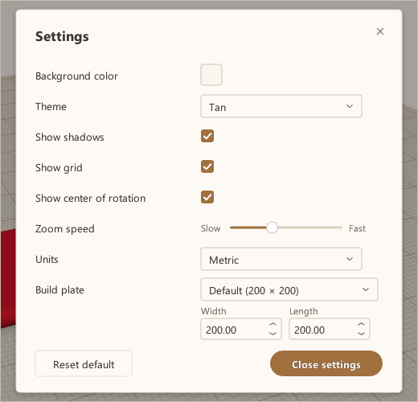
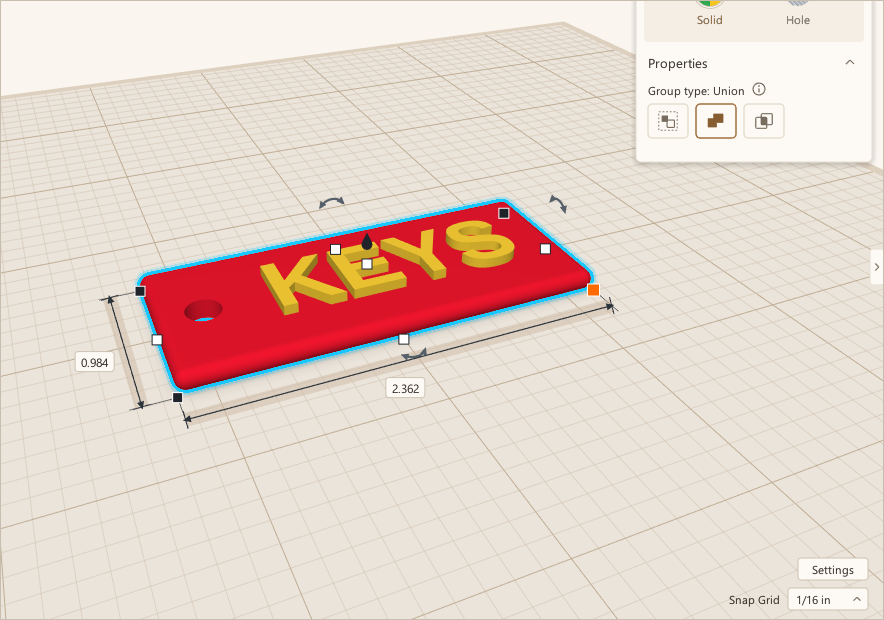
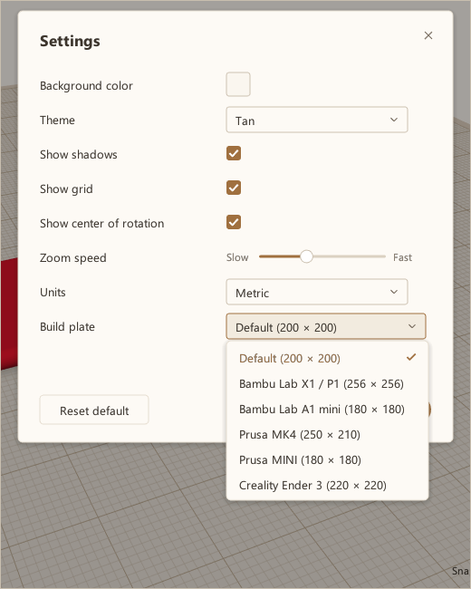
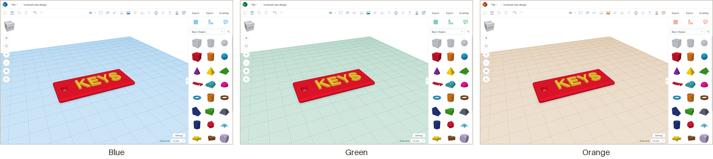
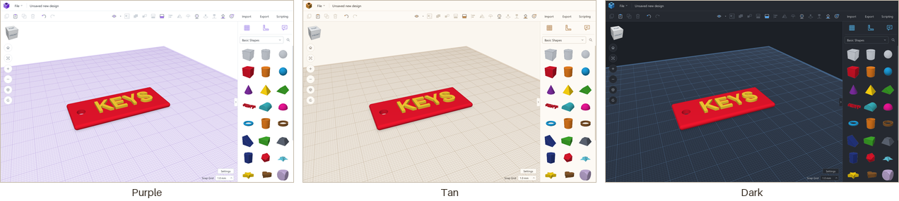

Chapter 10
Settings
Click Settings, at the bottom right of the view, to open the settings.

Background color, Theme, Zoom speed and Show center of rotation change at once. The other settings take effect when you click Close settings; press Esc to close the dialog without keeping them. Reset default puts every setting back as it was when ScottiCAD was new.
| Setting | What it does |
|---|---|
| Background color | The colour behind the build plate. Click the swatch to choose |
| Theme | The colours of the whole window. See below |
| Show shadows | The soft shadow each shape casts on the plate |
| Show grid | The grid lines on the build plate |
| Show center of rotation | The marker that shows the point the view turns round while you orbit (Looking around) |
| Zoom speed | How far one click of the mouse wheel zooms |
| Units | Metric (millimetres) or Imperial (inches) |
| Build plate | The size of the plate: a printer from the list, or your own width and length |
Units
Choose Imperial to work in inches. Every number in the program changes: sizes, distances, the ruler, the snap grid (which becomes fractions of an inch) and the grid on the plate.

Changing the units doesn't change the size of anything. A 25.4 mm cube becomes a 1 inch cube.
Whatever the units, you can type a size in the other system by adding the unit: 25mm in an inch design, 1/2in in a millimetre one. See Sizing with exact numbers.
The units are saved with each design.
The build plate
The build plate stands for your printer's bed. Set it to your printer's size, and the print check can tell you when a part is too big or hangs over the edge.
Choose a printer from the Build plate list, or type a Width and Length.

| Preset | Size |
|---|---|
| Default | 200 × 200 mm |
| Bambu Lab X1 / P1 | 256 × 256 mm |
| Bambu Lab A1 mini | 180 × 180 mm |
| Prusa MK4 | 250 × 210 mm |
| Prusa MINI | 180 × 180 mm |
| Creality Ender 3 | 220 × 220 mm |
The plate's size is saved with each design.
Themes
A theme sets the colours of the window and the build plate. There are six.


The theme is a setting of the program, not of the design: it stays as you set it for every design you open.
The snap grid
The Snap Grid, beside the Settings button, is the step that shapes move and resize by. It is covered in Moving, sizing and turning.
Filament settings
The print settings behind the filament estimate have their own place, in the filament panel. See Getting ready to print.